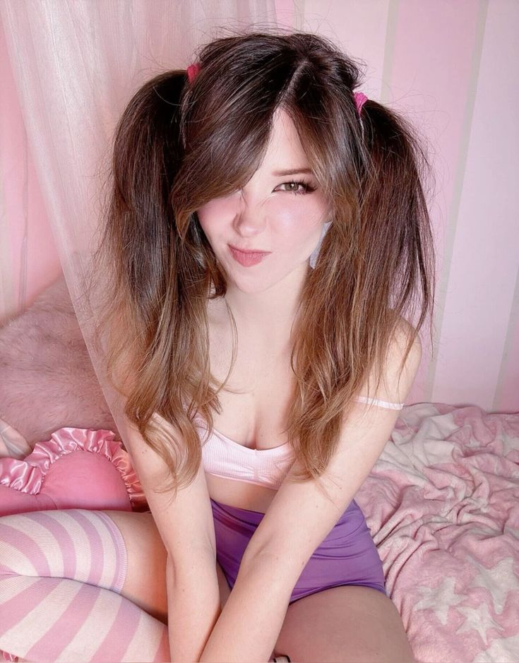

Alt vs E-girl
On TikTok, "alt" stands for alternative and refers to a subculture that creates and engages with content outside the mainstream. "Alt TikTok" is a community that shares unique, artistic, or quirky content and is often contrasted with "straight TikTok" or mainstream TikTok. The term "alt text" also refers to an accessibility feature that provides a description of an image for users who are visually impaired.
Wheareas an e-girl is a youth subculture and aesthetic, short for "electronic girl," that originated online and is popularized on platforms like TikTok. It's characterized by an online persona with a specific fashion and makeup style that blends elements of emo, scene, grunge, and anime, often featuring heavy eyeliner and blush. The aesthetic is associated with internet culture, including video games, anime, and K-pop.
The main difference is definitely appearance.
Alts tend to look like this:
Key characteristics of the alt subculture
Online persona:
Alt individuals cultivate their identity across platforms like TikTok, Instagram, and Tumblr, often expressing themselves through unconventional aesthetics, niche humor, and self-aware irony. Their online presence emphasizes authenticity, emotional openness, and rejection of mainstream social norms.
Aesthetic and fashion:
Alt fashion blends elements from punk, emo, grunge, goth, and Y2K revival styles. It commonly includes oversized band tees, fishnet layers, ripped jeans, chunky boots, plaid skirts, and bold accessories like safety pins or chains. The look intentionally contrasts polished beauty standards with raw individuality and rebellion.
Hair:
Hair is often dyed in striking or unnatural colors—such as deep red, platinum blonde, or green—and may include undercuts, shaggy layers, or asymmetrical bangs. Texture and imperfection are embraced, reflecting a “messy but intentional” aesthetic.
Makeup:
Alt makeup tends to be expressive and experimental. It may feature bold eyeliner shapes, dark or smudged eyeshadow, heavy mascara, and statement lip colors like black or deep burgundy. Some use graphic liner art or stickers to emphasize artistic self-expression over conventional beauty.
Interests:
The alt community is tied to interests in alternative music (punk, emo, indie, hyperpop), visual art, digital subcultures, gaming, and internet humor. Members often engage with DIY art scenes, underground fashion, and online countercultural spaces.
Evolution of the term:
“Alt” originally described alternative subcultures outside the mainstream—especially in music and fashion—but has evolved to represent a broader online identity celebrating individuality, creativity, and anti-conformity. It now functions as both a style and a mindset that values authenticity over popularity.
E-girls tend to look like this:

Key characteristics of the e-girl subculture
Online persona: The identity is primarily cultivated online through social media platforms like TikTok, Instagram, Twitch, and YouTube.
Aesthetic and fashion: E-girls often wear a mix of styles, including black and striped long-sleeve shirts under band tees, pleated skirts, and chokers.
Hair: any length but mostly chin to shoulder length hair,
some sort of bangs and dyed a bright color, likely half and half or the front two strips dyed.
Makeup: Makeup is a key component, featuring heavy winged eyeliner, blush applied across the bridge of the nose, and small, drawn-on shapes like hearts or tears under the eyes.
Interests: The culture is associated with interests such as video gaming, anime, K-pop, and underground music.
Evolution of the term: While the term was initially used negatively to describe women who spent a lot of time gaming, it has been reclaimed by many as a term for their own online lifestyle and aesthetic.